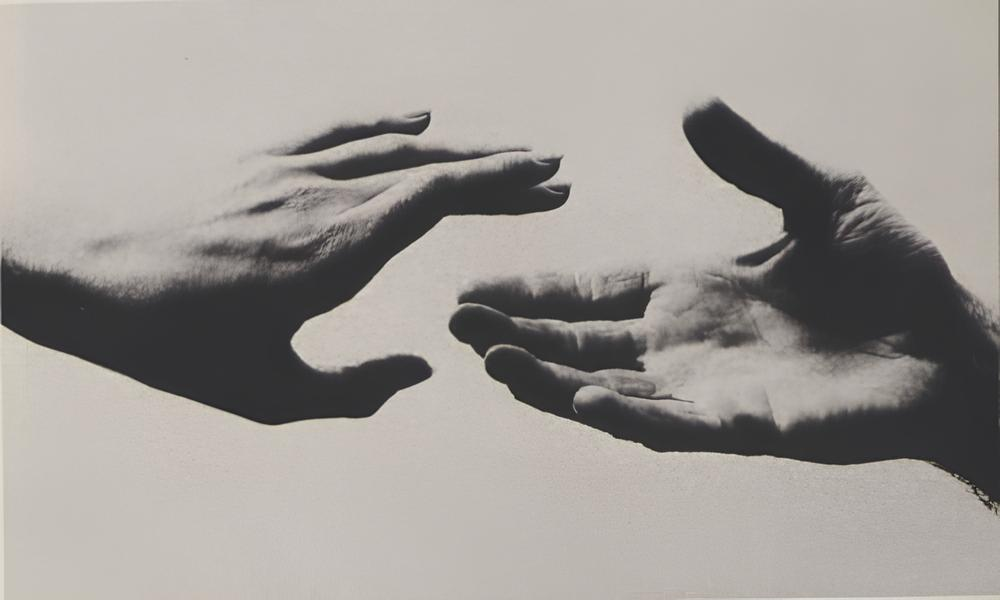
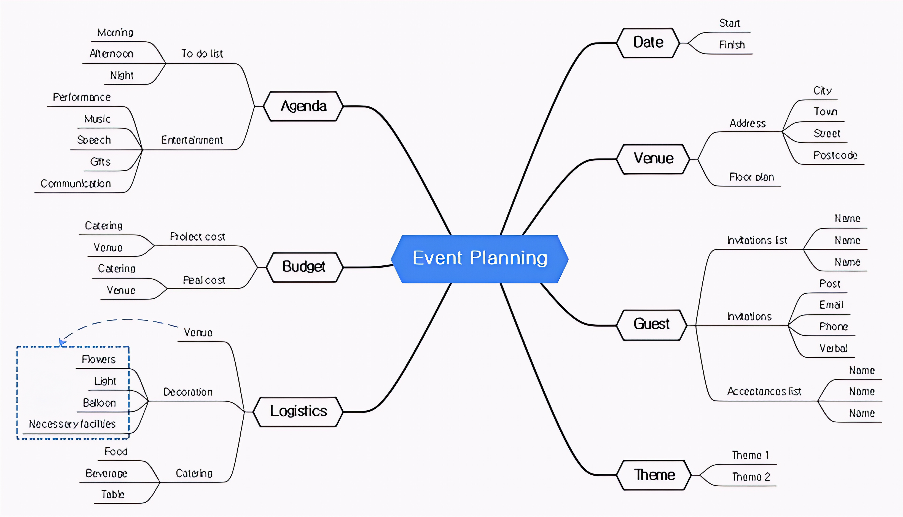
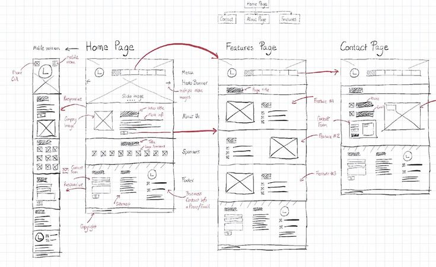

사용자를 깊이 이해하는 단계.
사용자 인터뷰, 관찰, 설문조사, 페르소나 등을 통해 문제를 겪고 있는 사용자의 입장이 되어
그들이 무엇을 보고, 느끼고, 경험하는지 관찰하고 인터뷰하며 깊이 공감합니다.
핵심 문제를 명확히 규정하는 단계.
이전 단계에서 얻은 정보를 인사이트 도출, 데이터 분석을 통해
사용자가 겪는 진짜 문제, Problem Statement를 명확하게 정의합니다.

해결책을 위한 아이디어를 발산하는 단계.
정의된 문제를 해결하기 위해 브레인스토밍, 마인드맵 등으로
비판 없이 최대한 많은 아이디어를 자유롭게 내놓습니다

아이디어를 빠르게 시각화하는 단계.
선택된 아이디어를 사용자가 경험해 볼 수 있도록 빠르고 저렴한 비용의 시제품을 만듭니다.
아이디어를 구체화하고 테스트하는 것이 목적입니다.
사용자에게 피드백을 받는 단계.
프로토타입을 실제 사용자에게 보여주고 사용하게 하면서 피드백을 받습니다.
이 과정에서 문제점을 발견하고, 2나 3단계로 돌아가 개선점을 찾아냅니다.